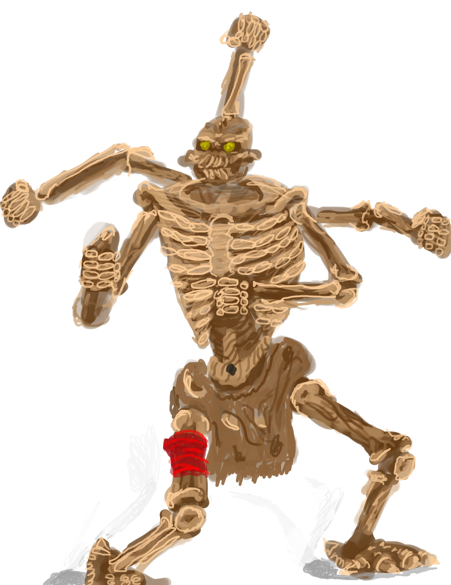
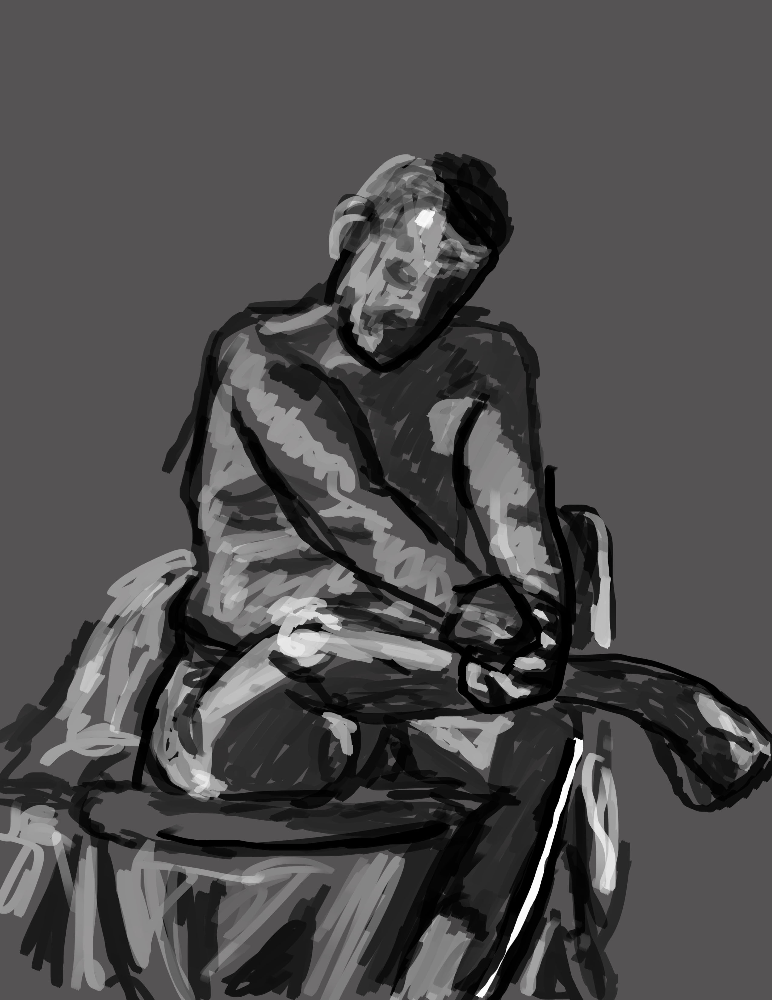
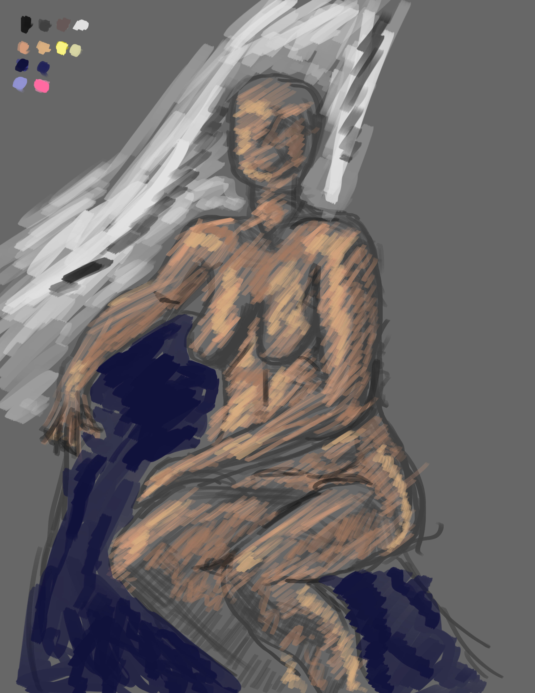
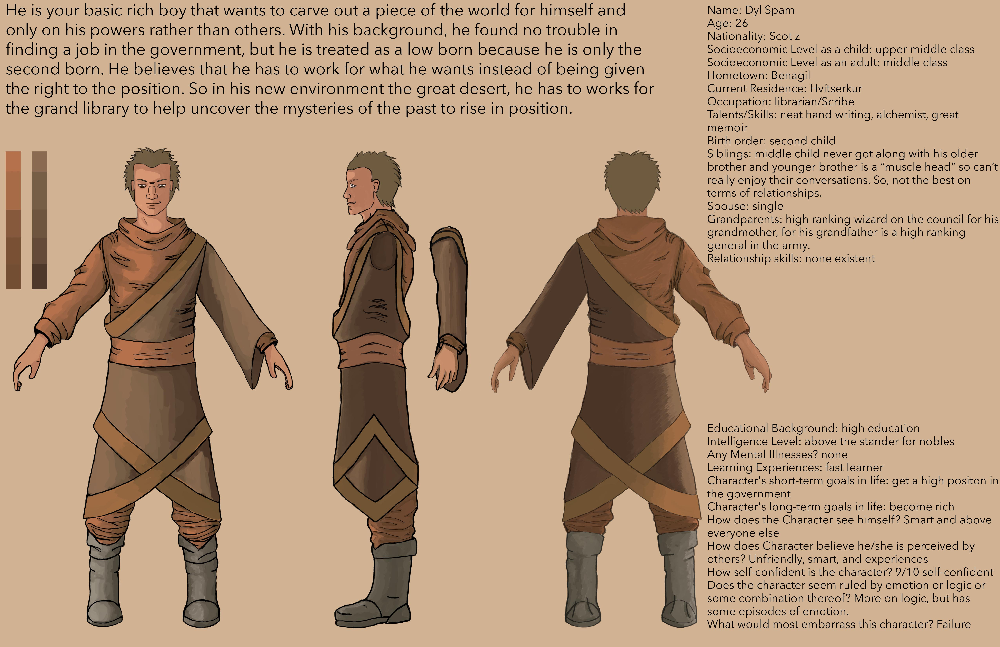

The first test of our abilities in Photoshop. And I learned that day go details as small as you can and not just do it with big brush and hope it is straight.
Working with toys now that we bring our toys that we still have and paint them in Photoshop. There are many of them because they were five to ten min drawings and putting them all up here was not a good idea. (and that would be a pain to do.)
Use your models now come on. Every now and then we got a model to come in and pose for us. Like with the toys they went fast and there are many of them that range from my hand is dead to that is the work of a master.
Today’s model and method was color and shape. Build mass with color it will be fun he says take your glass off it will be fine they say.
Last is creating a character and concept of that character. So, what do you get when you combine a rushed paint job and running through ideas of what this character’s story could be and you get this. Your welcome.